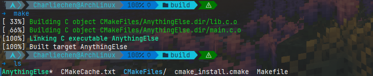

CMake教程跟做I
CMake 教程跟做与翻译
STEP 1: 入门与理解
我们起手的，最基本的 CMake 项目是从单个源代码文件构建的可执行文件。对于像这样的简单项目，只需要一个包含三个命令的 CMakeLists.txt 文件即可。
cmake_minimum_required(VERSION 3.30)
project(CharliesDemo)
add_executable(CharliesDemo lib.c main.c) 如你所见，就是这样的简单，对应的文件树如下：
├── CMakeLists.txt
├── lib.c
├── lib.h
└── main.c注意：尽管 CMake 支持大写、小写和混合大小写命令，但首选小写命令，并将在整个教程中使用小写命令。
任何项目的最顶层 CMakeLists.txt 都必须通过使用 cmake_minimum_required() 命令指定最低 CMake 版本来开始。这将建立策略设置并确保以下 CMake 函数使用兼容版本的 CMake 运行。
要启动项目，我们使用 project() 命令来设置项目名称。每个项目都需要此调用，并且应在cmake_minimum_required() 之后立即调用。正如我们稍后将看到的，此命令还可用于指定其他项目级信息，例如语言或版本号。
最后，add_executable() 命令告诉 CMake 使用指定的源代码文件创建可执行文件。
cmake_minimum_required设置CMake版本的最小值
格式很简单，我们需要在一份CMake构建文本的最开头使用这个命令
cmake_minimum_required(VERSION 3.30) 这是因为不同版本的CMake对指令的支持程度不一致，有的时候必须要使用指定的版本进行构建。这里指定的是当前最新的3.30进行构建，对于自己的机器上，可以找到自己使用的cmake然后输入
cmake --version 返回自己使用cmake的版本进行参考。
project声明工程属性
cmake当然需要知道我们构建的目标工程的名称，以及使用的语言等其他的信息。一个完整版的project指令比较复杂。笔者目前的工程比较小，因此常常使用到的无非就是名称，当然这是其更加完善的形式：
project(<PROJECT-NAME>
[VERSION <major>[.<minor>[.<patch>[.<tweak>]]]]
[DESCRIPTION <project-description-string>]
[HOMEPAGE_URL <url-string>]
[LANGUAGES <language-name>...])add_executable添加可执行文件
在我们只有零星几个文件的时候，这个指令只需要在目标后面光光添加文件就行，这如同我们的demo那样：
add_executable(CharliesDemo lib.c main.c) 就是将我们的project名称作为一个目标CharliesDemo，他由lib.c main.c构成。
值得注意的是，这个目标名是随意的！我们不一定非的是CharliesDemo这个ProjectName,他可以是任何你要的可执行文件名称：比如说我们修改脚本：
cmake_minimum_required(VERSION 3.30)
project(CharliesDemo)
add_executable(AnythingElse lib.c main.c)
使用CMake构建工程
写完CMakeLists了，我们就需要构建。这里先不讨论更加复杂的构建方式，就简单谈谈如何构建上述简单的小工程！
笔者建议在任何其他地方设置一个构建的目录build。作为演示，我们直接在源码路径下新建一个build文件夹存放任何编译Middlewares，这样，不会打乱源代码文件夹下的文件，方便我们查看索引！
我们首先创建一个build文件夹：
mkdir build 随后进入这个文件夹。一般的我们cmake不带任何参数说明的参数默认是源代码路径：
tree .
├── build
├── CMakeLists.txt
├── lib.c
├── lib.h
└── main.cpwd
path/to/demo/build
cmake .. cmake随后会输出一些构建信息，笔者的输出如下
➜ cmake ..
# 告知使用的编译器版本
-- The C compiler identification is GNU 14.2.1
-- The CXX compiler identification is GNU 14.2.1
# 检查C ABI
-- Detecting C compiler ABI info
-- Detecting C compiler ABI info - done
-- Check for working C compiler: /usr/bin/cc - skipped
# 检查特性是否符合构建要求
-- Detecting C compile features
-- Detecting C compile features - done
-- Detecting CXX compiler ABI info
-- Detecting CXX compiler ABI info - done
-- Check for working CXX compiler: /usr/bin/c++ - skipped
-- Detecting CXX compile features
-- Detecting CXX compile features - done
-- Configuring done (0.8s)
# 看到这里基本上没问题了——我们在Linux下默认生成的是Makefile,Windows则是会生成VS build Sln文件
# 当然你可以自己调整
-- Generating done (0.0s)
# 这里告诉你文件写到何处
-- Build files have been written to: /home/Charliechen/Works/cmake_learning/build根据自己的构建工具自行构建
如果您设置了其他的构建工具——请自行查阅构建方式。笔者使用的Makefile很简单：make就行。
make
[ 33%] Building C object CMakeFiles/AnythingElse.dir/lib.c.o
[ 66%] Building C object CMakeFiles/AnythingElse.dir/main.c.o
[100%] Linking C executable AnythingElse
[100%] Built target AnythingElse 这样我们就拿到了可用的可执行文件。STEP 1(Extra A)：指定C++的版本
有的时候，我们会是对一个比较年老的项目进行构建。这个时候，我们可能就需要限制一下使用的C/C++的版本（比如说使用的是C++98）来进行编译；或者，我们的项目很潮，使用的是C++17以上的版本，这个时候限制就显得更为必要了（一些新的特性需要新版本支持）。我们就需要作出限制。
在这里，我们需要使用到的就是：
CMAKE_CXX_STANDARD # CMake里的C++标准变量
CMAKE_CXX_STANDARD_REQUIRED # CMake里的一个BOOL变量，用于指示是否强迫版本
set() # 设置这些变量使用到的CMake函数 当然，我们只需要在CMakeLists.txt中，在project的下方和add_executable函数的上方加入
set(CMAKE_CXX_STANDARD 11)
set(CMAKE_CXX_STANDARD_REQUIRED True) 这就表达了我们需要强制使用C++11编译本项目的意思！
STEP1(Extra B): 为我们的项目添加版本信息与配置的头文件
有时，让 CMakelists.txt 文件中定义的变量在源代码中可用可能会很有用。在这种情况下，我们想打印项目版本。实现此目的的一种方法是使用已配置的头文件。我们创建一个包含一个或多个要替换的变量的输入文件。这些变量具有特殊的语法，看起来像 @VAR@。然后，我们使用 configure_file() 命令将输入文件复制到给定的输出文件，并用 CMakelists.txt 文件中 VAR 的当前值替换这些变量。
虽然我们可以直接在源代码中编辑版本，但最好使用此功能，因为它可以创建单一事实来源并避免重复。
项目的版本信息很容易添加，我在上一篇就说到了：
project(CharliesDemo VERSION 1.0) 下面，我们可以在源代码文件中使用了。使用的bridge在哪里呢？那就是使用CMake里的configure_file指令。
他的作用很简单：将input文件复制到output文件，并在输入文件内容中的变量，替换引用为@VAR@或${VAR}的变量值。每个变量引用将替换为该变量的当前值，如果未定义该变量，则为空字符串。
实际上就是做拷贝替换的工作
- COPYONLY：只拷贝文件，不进行任何的变量替换。这个选项在指定了NEWLINE_STYLE选项时不能使用（无效）。
- ESCAPE_QUOTES：躲过任何的反斜杠(C风格)转义。
- @ONLY：限制变量替换，让其只替换被@VAR@引用的变量(那么${VAR}格式的变量将不会被替换)。这在配置${VAR}语法的脚本时是非常有用的。
- NEWLINE_STYLE style：指定输出文件中的新行格式。UNIX和LF的新行是\n，DOS和WIN32和CRLF的新行格式是\r\n。这个选项在指定了COPYONLY选项时不能使用(无效)。
通常情况下，输入文件以.h.in为后缀，输出文件以.h为后缀。
我们下面来试试看：
#define VERSION_MAJOR @CharliesDemo_VERSION_MAJOR@
#define VERSION_MINOR @CharliesDemo_VERSION_MINOR@ 引用工程的属性名称正式：工程名称+工程属性。我们的CMake在构建的时候就会替换我们的@VAR@为我们CMake的值。下面在CMake中配置：
configure_file(Config.h.in Config.h) 我们可以看看生成的Config.h文件
#define VERSION_MAJOR 1
#define VERSION_MINOR 0 使用一下，你会发现一个问题：
#include <stdio.h>
#include "Config.h"
#include "lib.h"
int main()
{
printf("VERISON_MAJOR: %d", VERSION_MAJOR);
printf("%d + %d = %d", 1, 2, my_add(1, 2));
} gcc找不到我们的Config.h。这里需要超前的提供一个这样的命令：
target_include_directories(CharliesDemo PUBLIC "${PROJECT_BINARY_DIR}") 这句话的含义是：对于目标CharliesDemo提供要索引的目录为我们的build路径。这里正有Config.h!
下面我们来看看我们的CMakeLists.txt脚本：
cmake_minimum_required(VERSION 3.30)
project(CharliesDemo
VERSION 1.0)
configure_file(Config.h.in Config.h)
add_executable(CharliesDemo lib.c main.c)
target_include_directories(CharliesDemo PUBLIC "${PROJECT_BINARY_DIR}") 看官自行回忆每一句话的含义。
STEP2: 构建一个可以使用的库
要在 CMake 中添加库，请使用 add_library() 命令并指定哪些源文件应组成库。我们可以使用一个或多个子目录来组织项目，而不是将所有源文件放在一个目录中。 在这种情况下，我们将专门为我们的库创建一个子目录。 在这里，我们可以添加一个新的 CMakeLists.txt 文件和一个或多个源文件。 在顶层 CMakeLists.txt 文件中，我们将使用 add_subdirectory() 命令将子目录添加到构建中。
一旦创建了库，它就会通过 target_include_directories() 和 target_link_libraries() 连接到我们的可执行目标。
下面我们尝试使用CMake来构建一个更加具备层级的构建脚本。
首先先有一个库：
现在我们将Math库放到一个目录下，表达的是我们这里是一个子构建系统：构建一个Math库。各位参考一下：
➜ tree MathLibs/
MathLibs/
├── CMakeLists.txt
├── mathLibs.c
└── mathLibs.h
1 directory, 3 files 在这里，我们写一个一行话的CMakeLists.txt:那就是表达构建一个MathLibs:
add_library(MathLib mathLibs.c)➜ cat MathLibs/mathLibs.c
#include "mathLibs.h"
int my_add(const int add1, const int add2){
return add1 + add2;
}
➜ cat MathLibs/mathLibs.h
#ifndef _LIB_H
#define _LIB_H
int my_add(const int add1, const int add2);
#endif /* ifndef _LIB_H
#define _LIB_H */ 下一步就是修改我们的main.c:
#include <stdio.h>
#include "Config.h"
#include "mathLibs.h"
int main()
{
printf("VERISON_MAJOR: %d", VERSION_MAJOR);
printf("%d + %d = %d", 1, 2, my_add(1, 2));
} 很好，下面我们重点改CMakeLists.txt
cmake_minimum_required(VERSION 3.30)
project(CharliesDemo
VERSION 1.0)
configure_file(Config.h.in Config.h)
# 添加一个构建的子目录，CMake将会先构建这个子目录的内容
add_subdirectory(MathLibs)
add_executable(CharliesDemo main.c)
# 添加一个包含目录：这是因为main.c中应用了mathLibs.h
target_include_directories( CharliesDemo PUBLIC
"${PROJECT_BINARY_DIR}"
"${PROJECT_SOURCE_DIR}/MathLibs")
# 提示链接我们构建的库
target_link_libraries(CharliesDemo PUBLIC MathLib)
现在，我们就完成了我们的构建脚本即可！
Reference
https://cmake.org/cmake/help/latest/command/cmake_minimum_required.html